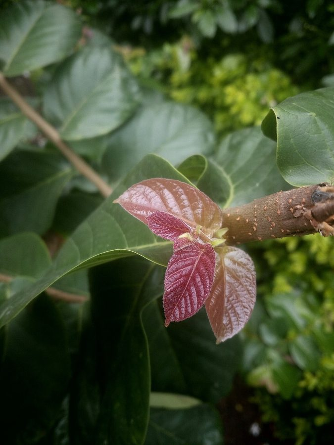

छिल्लीIndian Elm
Holoptelea integrifolia · Ulmaceae · FLR-0066

- Scientific name
- Holoptelea integrifolia (Roxb.) Planch.
- Family
- Ulmaceae
- Hindi
- छिल्ली
- Status here
- native
- IUCN
- LC
When to look कब देखें
Present all year.
छिल्ली / Indian Elm
Holoptelea integrifolia (Roxb.) Planch. — Ulmaceae
छिल्ली (चिलबिल / पापड़ी / कांचू) — पूर्वी उत्तर प्रदेश के मैदानी जंगलों, गांव के बगीचों और विशेष रूप से घाघरा नदी के बलुआ किनारों पर पाया जाने वाला एक बड़ा, तेजी से बढ़ने वाला और पतझड़ी (deciduous) पेड़ है। इस पेड़ की सबसे बड़ी पहचान इसके वसंत ऋतु (मार्च-अप्रैल) में आने वाले विशिष्ट गोल, पंखदार चपटे फल (winged samara fruits) हैं, जो हवा चलने पर एक हेलिकॉप्टर की तरह गोल घूमते हुए नीचे गिरते हैं (spin as they fall)। इस समय पूरा पेड़ और उसके नीचे की ज़मीन इन हल्के पीले-भूरे पंखदार फलों से ढंक जाती है, जो बच्चों के खेलने के काम आते हैं। इसकी छाल धूसर-भूरे रंग की, खुरदरी और मखमली फुंसियों (warty bark) वाली होती है। पारंपरिक चिकित्सा में इसकी छाल के लसदार अर्क (mucilaginous bark extract) का उपयोग दाद, खाज और अन्य त्वचा विकारों के इलाज के लिए किया जाता है।
Quick Identification त्वरित पहचान
| Feature | Description |
|---|---|
| Tree habit | Large deciduous tree up to 15–25 meters high, with a clean, straight trunk and a broad, spreading canopy |
| Bark | Greyish-brown, rough, covered with small, warty pustules (corky lenticels), scaling off in thin flakes |
| Leaves | Alternately arranged, simple, ovate-elliptic, smooth, and paper-thin, smelling strongly of cut grass when crushed |
| Fruit | A flat, papery, circular winged fruit (samara), containing a single seed in the center, ends in a deep notch |
| Seed dispersal | The papery wings allow the wind to carry the seeds over long distances by spinning through the air |
Field tip: Walk near the Ghaghra river embankments in late March. Look for a tree that is completely bare of leaves but covered in millions of light brown, round, papery disc-like wings. If the wind blows, watch how these discs spin and drift through the air like snow. The bark is grey and warty.
Morphology आकारिकी
Biometrics (typical measurements of mature trees in the northern Indian plains):
| Measurement | Range |
|---|---|
| Tree height | 15–25 m |
| Trunk diameter (DBH) | 40–80 cm |
| Leaf length | 8–14 cm |
| Samara fruit diameter | 2.0–3.0 cm |
| Seed size | 4–6 mm |
| Weight of 100 fruits | 5–8 g |
Trunk and Bark: The trunk is tall and buttressed at the base in old trees. The bark is grey, rough, warty, peeling off in irregular woody flakes.
Foliage: Simple, alternate leaves. The leaf margins are entire (integrifolia = entire-leaved), though young leaves are sometimes sharply serrated. The leaves fall in December, and new leaves emerge in April after fruiting.
Flowers: Small, greenish-yellow, unisexual or bisexual, lacking petals, clustered in dense axillary fascicles on bare branches in January and February.
Fruit: A dry, circular samara with a broad papery wing. The wing is deeply notched at the tip, and the seed sits exactly in the center.
Associated Species / Interactions संबंधित प्रजातियाँ
- Wind dispersal: The tree is adapted for wind-pollination and wind-dispersal (anemochory), utilizing the dry winds of late spring to scatter its seeds.
- Pollinators: Honeybees visit the small, petal-less flowers in winter to collect pollen.
- Foliage feeders: The leaves are consumed by the larvae of the Elm Moth and various leaf-rolling beetles.
Pests and Diseases कीट और रोग
- Elm Defoliator: Heavy infestations of caterpillars can completely defoliate the tree in early monsoon, though the tree quickly grows new leaves.
- Stem Borer Beetle: Larvae of cerambycid beetles bore tunnels into the soft wood of weakened trees, leading to branch drop.
- Leaf Spot Fungus: Cercospora species cause black spots on the leaves during high monsoon humidity.
Traditional and Ethnobotanical Use पारंपरिक और नृवंशवनस्पति उपयोग
- Skin Ringworm Paste: The rough bark is scraped, ground with water on a stone plate, and the resulting mucilaginous grey paste is applied topically to treat ringworm, eczema, and skin sores.
- Traditional Toy Play: Children collect the papery winged fruits in March, throwing them high in the air to watch them spin like paper helicopters (chilbil ka pankha).
- Wound Healing Wash: The leaves are boiled in water to prepare an antiseptic wash, used in traditional veterinary medicine to clean wounds on domestic cattle.
- Soft Wood Timber: The light, yellowish-white wood is easy to work and is used locally for making packing boxes, matches, and light agricultural tools.
Expected Locally स्थानीय रूप से अपेक्षित
Not a field record. Written from published accounts for eastern Uttar Pradesh. No confirmed local sighting yet — if you have seen it, that is what the atlas needs.
अभी तक स्थानीय पुष्टि नहीं। यह विवरण प्रकाशित स्रोतों से है, किसी अवलोकन से नहीं।
A common and culturally familiar native tree along river basins and village groves across the Basti district. They are regularly observed in the Harraiya and Vikramjot blocks near the banks of the Saryu and Ghaghra rivers. Residents report that the seeds (papri) are collected by children in spring. The sudden emergence of green leaves in April provides welcome shade at the start of the hot season.
Distribution वितरण
Global range: Widespread across the dry tropical zones of South Asia (India, Nepal, Myanmar, Sri Lanka) and parts of Indochina.
In India: Found throughout the dry deciduous forests and plains of northern, central, and peninsular India.
In Uttar Pradesh: Common state-wide in all riverine and deciduous forest tracts.
In Basti district / eastern UP: Common across all rural blocks, particularly along river beds.
Research Questions शोध प्रश्न
Anyone can investigate these | कोई भी इन प्रश्नों की जाँच कर सकता है
- How many meters does a spinning samara fruit travel from the parent tree during a 10 km/h wind in March? — Measure and record seed dispersal distances.
- Do goats in your village prefer eating the leaves of young Elm shoots over mature leaves? — Observe livestock feeding habits.
- What is the germination rate of Indian Elm seeds when sown in dry sandy soil versus moist clay soil? — Conduct planting experiments.
- How many days does a bare Indian Elm tree remain covered in fruits before new leaf buds emerge in spring? — Track tree phenology.
- Does the population count of insect defoliators on Elm trees decrease in urban roadside trees compared to rural forests in Basti? / क्या बस्ती के शहरी इलाकों के पेड़ों में ग्रामीण जंगलों की तुलना में चिलबिल के पत्तों को खाने वाले कीड़ों का प्रकोप कम होता है? — Compare insect damage on different trees.
Similar Species मिलती-जुलती प्रजातियाँ
| Species | How to tell apart | comparison |
|---|---|---|
| Indian Beech (Millettia pinnata) | Has pinnate compound leaves; pinkish flowers; seed pod is hard, woody, oval, lacks wings | करंज — पिन्नेट संयुक्त पत्ते, चपटी लकड़ी जैसी फलियाँ |
| White Mulberry (Morus alba) | Has serrated leaves; small edible sweet composite berries; lacks winged fruits | शहतूत — आरीदार पत्ते, शहतूत के छोटे रसीले फल |
| Shisham (Dalbergia sissoo) | Has alternate leaflets; flat, thin paper-like pods that are elongated (not round) | शीशम — गोल पत्ते, लंबी चपटी फलियाँ |
Field rule: Large deciduous tree with rough grey warty bark, simple leaves smelling of cut grass, and millions of round, papery disc-like winged fruits that spin through the air in spring, is the Indian Elm.
Taxonomy & Classification वर्गीकरण
Original description. William Roxburgh described the Indian Elm as Ulmus integrifolia in 1798 in his Plants of the Coast of Coromandel (Vol. 2, p. 56, plate 168). Jules Émile Planchon placed it in the genus Holoptelea in 1873. The genus name Holoptelea is derived from the Greek holos (entire/complete) and ptelea (elm). The specific name integrifolia is Latin for entire-leaved.
Subspecies. Monotypic — no subspecies are currently recognised.
Family and order placement. Placed in the order Rosales, family Ulmaceae (elm family), which contains approximately 7 genera and 45 species of temperate and tropical trees.
Phylogenetic notes. Holoptelea is one of the few tropical representatives of the primarily temperate family Ulmaceae, showing high adaptation to seasonally dry monsoonal climates.
IUCN status rationale. Assessed as Least Concern (LC) by the IUCN Red List (assessed by the IUCN SSC Global Tree Specialist Group). It is a widespread, resilient species with a stable population.
Photo Gallery फोटो गैलरी
References संदर्भ
- Planchon, J. É. (1873). Holoptelea integrifolia. In De Candolle, A. P., Prodromus Systematis Naturalis Regni Vegetabilis, Paris, Vol. 17. [original generic transfer]
- Roxburgh, W. (1798). Plants of the Coast of Coromandel. London, Vol. 2, p. 56, t. 168. [original description]
- Brandis, D. (1906). Indian Trees. Archibald Constable & Co., London.
- Troup, R. S. (1921). The Silviculture of Indian Trees. Oxford University Press.
- World Flora Online (2024). Holoptelea integrifolia taxon details.
- GBIF Occurrence Data — Holoptelea integrifolia, India (2010–2025).
Source file: species/flora/trees/indian_elm.md